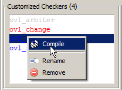

Compiling Customized Assertion Checkers
Once you have
customized selected assertion checkers from the OVL library and
renamed them for your project, the next step is to compile the customized
checkers. You can compile a single checker or multiple checkers.
Prerequisites
The OVL Checkers Manager graphic interface must be open and displayed, and an assertion checker must have been customized.
Procedure
- Compile the selected checker
by taking one of the following actions:
Select from the menus.
Click the Compile toolbar button.

Right-click the selected checker and choose Compile from the popup menu.
Figure 1. Customized Checkers Popup Menu - To compile all assertion checkers
in the Customized Checkers list do either of the following:
Select from the menus.
Click the Compile All button in the toolbar.

Results
The Transcript window displays the progress of compile operations and whether the operations were successful or failed.